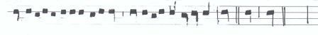
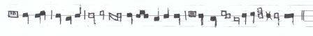
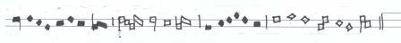
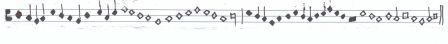

Siena, Biblioteca comunale, Ms. L.V.30
[folio 129r]
[1]
Sub brevissimo compendio Philippo de Vitriaco in musica incipit.
Omni desideranti notitiam artis musicae mensurabilis tam novae
quam veteris obtinere certas regulas hic praesentes sub brevi compendio
proposse non postpono fideliter assignare. Et quia voces seu
notulas proportionabiliter oportet in hoc opere mensurare prout longae
vel breves et semibreves ac minimae figurantur idcirco
ad figurationem et valorem ipsarum breviter procedamus.
[2]
Longa ergo sub forma quadrata figurata est habens tractum a parte de
xtra ascendentem vel descendentem, vel duos quorum dextra ex
cedit sinistrum, et tunc talis nota dicitur plica longa. Et valet
tria tempora in modo perfecto, duo autem in imperfecto. Modus im
perfectus est, breves vel tempora per numerum binarium computare. Et
dicitur imperfectus eo quod numerus binarius est imperfectus. Numerus vero ternarius
est perfectus assumptus a trinitate scilicet a patre et filio et spiritu sancto, ubi
est summa perfectio. Modus perfectus cognoscitur per pausas quando pau
sae in longas sunt perfectae vel quando de longa usque ad aliam longam
per numerum ternarium melius quam binarium tempora computantur ut
hic patet.

[3]
Item nota, modus tempus et prolatio per rubeas
distinguuntur figuras. Unde quandocumque longa invenitur rubea ponitur
[folio 129v]
ad differentiam modi. Itaque si nigre fuerint de modo perfecto,
rubee sunt de modo imperfecto et econverso ut hic patet.

a[4]
Breves ponuntur rubeae ad differentiam temporis. Itaque si nigre breves
fuerint de tempore perfecto, rubee sunt de imperfecto et econverso.
Nisi cum aliqua longa forsitan ordinetur, sicut in mottetti tenore
qui dicitur, In arboris, vel in tenore de, In nova fert animus ut
hic.

[5]
Semibreves rubeae ponuntur ad differentiam prolationis, ut si ni
gre semibreves fuerint de maiori prolatione, rubee sunt de
minori et econverso, nisi semibreves cum aliqua brevi forsi
tan ordinetur quia tunc ponuntur ad differentiam prolationis ut
hic patet.

[6]
Hos versus disce
qui cantum discere cupis: Ante namque longa tria tempora lon
ga meretur. Si brevis addatur duo tempora longa tenetur.
Inter perfectas si brevis bina locetur, Temporis unius sit prima, se
cunda dupletur.